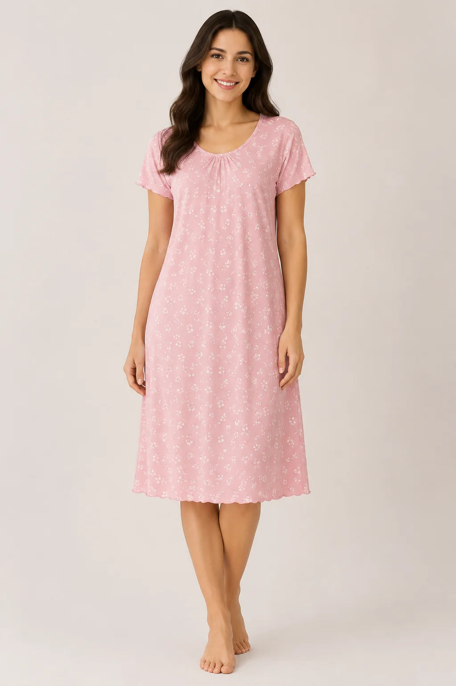
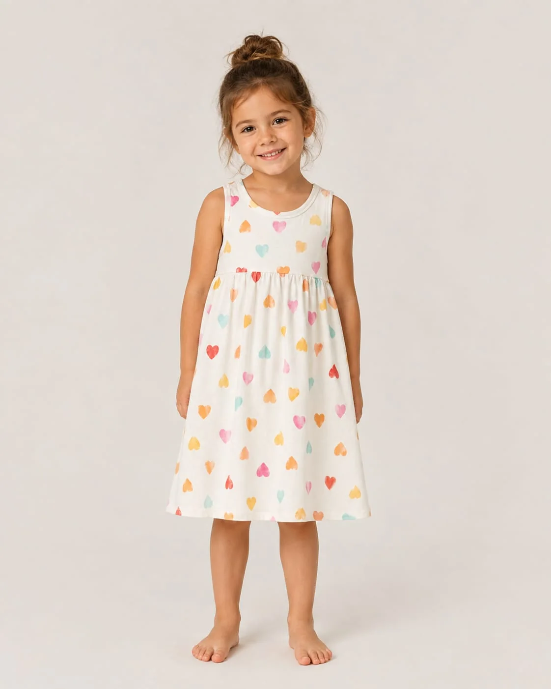
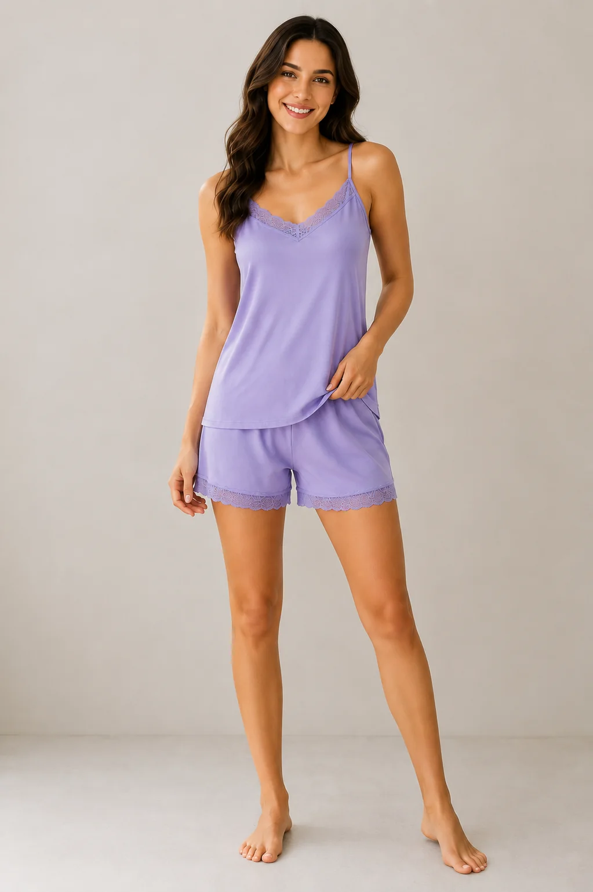
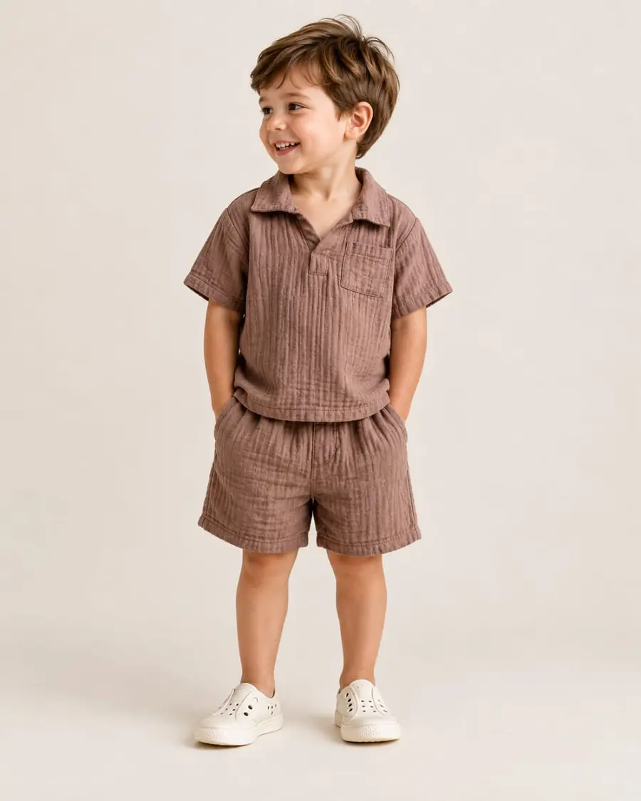

Women’s dresses
Casual, lounge and print-led silhouettes developed around drape, fit and construction.
Customer-led development
Coordinate silhouette, fabric, fit, comfort, decoration, trims and market requirements across dresses, casualwear, loungewear and coordinated sets.

Range directions
Each product is assessed against its design, materials, construction, quantity, destination and applicable buyer or market requirements.

Casual, lounge and print-led silhouettes developed around drape, fit and construction.

Tops, shorts and coordinating sets focused on comfort, fit, fabric and finishing.

Product combinations aligned through sizing, comfort, trims and shared material direction.
Product scope
T-shirts, tops, dresses, shorts and related styles developed to the required fit and seasonal direction.
Relaxed separates and sets coordinated around softness, movement, coverage and care performance.
Nightdresses and sets developed with defined fabric, fit, trims, construction and labelling.
Tops, dresses, shorts and sets scaled around the intended age group and size range.
Layered or detail-led products requiring careful construction, trim, comfort and workmanship review.
Artwork, repeat, placement, colours and technique aligned with garment panels, sizing and care needs.
Kidswear requirements
Requirements vary by product, age group and destination market. Buyers should provide their applicable standards, testing protocols and restricted design or trim requirements before development.
Development flow
Set age or customer group, use, market, fit direction and quality level.
Identify construction, trim, decoration, comfort and compliance questions early.
Apply measurements, materials, styling, artwork and finishing information.
Review proportion, movement, construction and product-specific details.
Close approved materials, specifications, tests, labels and packing.
Connect approvals to production milestones and quality checkpoints.
Related pages
Common questions
The broad stages are similar, but measurements, fit, comfort, construction, trims and applicable market requirements must be defined separately for each product and customer group.
Include the intended age group, size range, product, materials, quantity, destination market, design details and all applicable buyer safety, testing and labelling requirements.
Artwork scale, placement, repeat and panel position should be reviewed against the size range and garment construction before final approval.
Share your category, size range, references, quantity, destination and required date.